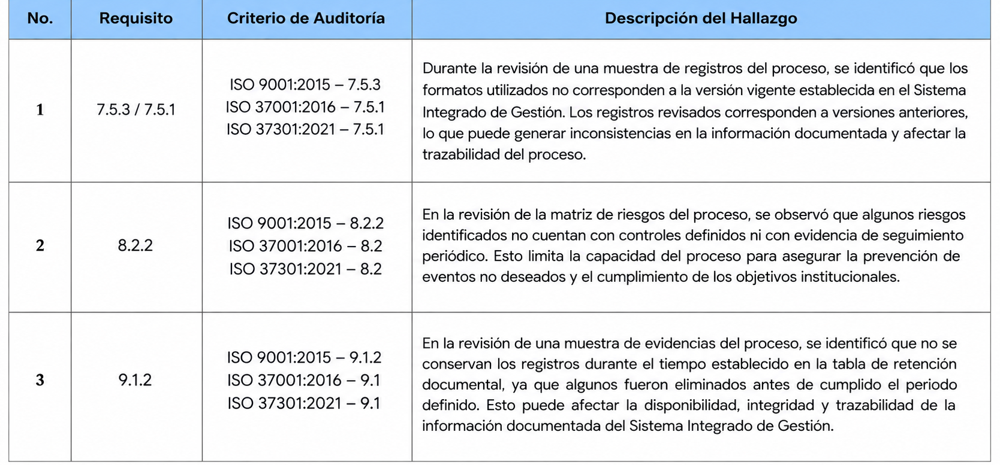

Evaluación y Mejora
Código: EM-PG-03-F05
F. Emisión: 26/04/2021
Informe de Resultados Auditoría Interna al SIG
Versión: 1
|
|
Evaluación y Mejora |
Código: EM-PG-03-F05 |
|
F. Emisión: 26/04/2021 |
||
|
Informe de Resultados Auditoría Interna al SIG |
Versión: 1
|
| No. Auditoría | AI-26-005 |
| Fecha Inicio y Fin de Auditoría | 10/02/2026 - 12/02/2026 |
| Área | Dirección de Gestión Administrativa |
| Procesos | Gestión Documental |
| Auditados | Mariana López, Andrés Castro, Sofía Méndez |
| Auditor Lider | Laura Martínez |
| Equipo Auditor | Carlos Ramírez, Diana Torres |
| Auditores en Formación | Paula Gómez, Juan Herrera |
| Criterios de la Auditoría | ISO 9001:2015, ISO 37001:2016, ISO 37301:2021 y documentación interna del Sistema Integrado de Gestión. |
| Fortalezas |
| Se evidenció compromiso del personal auditado con el cumplimiento de los procedimientos establecidos. Se observó adecuada organización de la documentación y disposición para suministrar las evidencias requeridas durante la auditoría. También se identificaron avances en la trazabilidad y seguimiento de los registros del proceso. |
| No Conformidades |
|
 |
| Observaciones |
| Durante la revisión documental se identificaron algunos registros pendientes de actualización y diferencias menores en la forma de almacenamiento de la información. Se recomienda fortalecer los mecanismos de seguimiento para asegurar la actualización oportuna de los documentos y registros asociados al proceso. |
| Oportunidades de Mejora |
| Se recomienda fortalecer la trazabilidad de los registros mediante herramientas digitales, establecer revisiones periódicas de la documentación y consolidar indicadores que permitan realizar seguimiento oportuno al desempeño del proceso. |
| Firmas |
|
Firma auditor lider: Laura Martínez |
|
Firma Gerente:
|